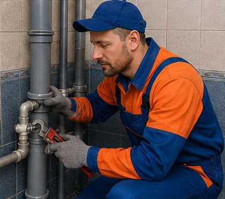
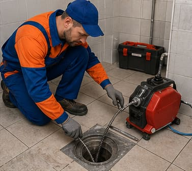

Про мене
Я Андрій — професійний сантехнік у Кривому Розі, який виконує ремонт, монтаж та обслуговування сантехніки у квартирах, приватних будинках і комерційних приміщеннях. Працюю відповідально, акуратно та з дотриманням технічних норм.
Виконую сантехнічні роботи будь-якої складності: усунення протікань, прочищення засмічень, заміну змішувачів, кранів, унітазів, сифонів, труб, встановлення та підключення бойлерів, пральних і посудомийних машин.
Терміновий виклик сантехніка у Кривому Розі можливий у день звернення. Працюю у всіх районах міста: Металургійному, Довгинцівському, Покровському, Саксаганському, Тернівському, Інгулецькому та Центрально-Міському.
Чому обирають мене
Послуги
150+
Виконаних об'єктів
6+
Років досвіду
100%
Задоволених клієнтів
Наші роботи


Відгуки клієнтів
Дуже задоволені роботою! Майстер швидко знайшов причину протікання та все акуратно полагодив. Приїхав у той же день.
Замовляв встановлення змішувача і підключення бойлера. Все зроблено якісно, чисто і без затримок. Рекомендую.
Потрібно було терміново прочистити засмічення у ванній. Майстер приїхав швидко і вирішив проблему за пів години.
Замовляли заміну труб у санвузлі. Майстер усе пояснив, акуратно виконав роботу та перевірив систему на протікання.
Робили заміну сантехніки у квартирі. Робота виконана акуратно, встановлені нові крани, сифони та змішувачі. Якість на високому рівні.
Викликали майстра для встановлення унітаза та нової раковини. Робота виконана швидко та дуже акуратно. Дуже задоволені сервісом.